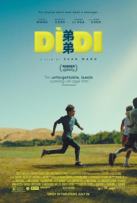

弟弟 / Dìdi
看完了，感觉养ABC还是有很多挑战的，一个人肯定养不过来，所以就6个人养吧 😁 //TL两周热榜第一啊
作品信息
| 导演 | 王湘圣 |
| 编剧 | 王湘圣 |
| 主演 | 王鹿山 / 陈冲 / 陈虹妤 / 张丽华 / 玛哈拉·帕克 / 劳尔·蒂亚尔 / 阿伦·张 / 凯朗·西里亚·丹克 / 苏尼尔·穆克吉·莫里洛 / 蒙塔伊·博斯曼 / 阿丽莎·赛德 / 阿莱西亚·西蒙斯 / 塔尼瓦·坎博杰 / 王秀芳 / 杰登·姜 / 乔齐亚·拉戈诺伊 / 约书亚·汉克森 / 乔琪·奥古斯塔 / 卡德·亨特 / 杰伊·博文 |
| 类型 | 剧情 / 喜剧 |
| 制片国家/地区 | 美国 |
| 语言 | 英语 / 汉语普通话 |
| 上映日期 | 2024-01-19(圣丹斯电影节) / 2024-07-26(美国) |
| 片长 | 96分钟 |
| IMDb | tt30319503 |
说过什么
2024-09-28 12:05:07
看过 · 时间来自广播，短评来自标记页
看完了，感觉养ABC还是有很多挑战的，一个人肯定养不过来，所以就6个人养吧 😁 //TL两周热榜第一啊
2024-09-14 07:01:22
广播 · 想看
TL两周热榜第一啊
最后一次看到是 2026-08-01T11:04:18+10:00 · 豆瓣原页